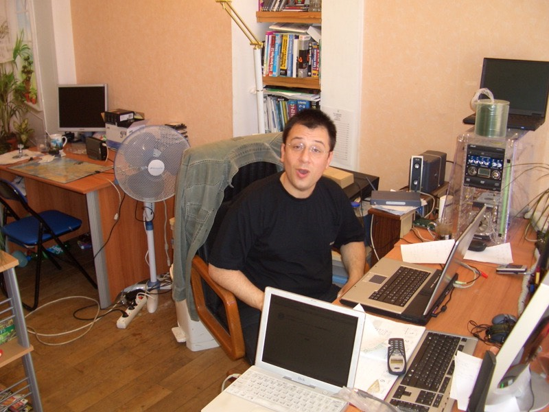
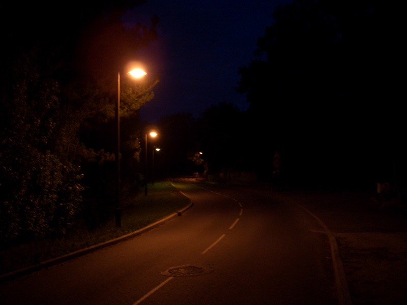

一覺好睡，過了九點才依依不捨的下床活動。
看到窗外晴朗的好天氣，心情不禁興奮了起來∼總算是夢寐以求的晴天。
下樓牽車時，店裡面養的拉不拉多會用跑百米的急速，瞬間衝過來裝可愛。
真的是好可愛的狗狗唷∼不會亂叫也不會亂咬，多聽話呀，乖∼摸摸頭
整裝完畢後，把房間鑰匙還給泰勒，祝我好運後就展開了有點曲折離奇的一天。
每天開始騎車的時候，我都會想，今天不曉得會遇到些什麼樣的事情？
是好事呢、還是壞事？但總是要等到每天晚上躺在床上開始寫遊記了，一切才算塵埃落定。
這一路上都非常不專心的騎車，只要看到建築物，就拿出iBook開始找網路訊號。
今天比較沒那麼幸運，沿路都沒遇到可用的網路。
之後總算找到了一個『VISIOLINE』的訊號，可以連接但是無法連到網際網路。
好不容易有可以用的網路，對外居然連不出去，太可惜了....
蓋上iBook，抬頭一看，耶？這不就是那個無線網路的訊號來源嗎？
拿著電腦進去裡面，去問問看有沒有辦法吧，偷用人家的是不道德的。
『請問有沒有辦法讓我的電腦連接到網路呢？』
『嗯，我們這邊不是網咖唷，你跑錯地方了。』
『我知道這邊不是網咖，但我看到門上面有貼一些網路的標語，所以來試試運氣，
我不會白用網路的，我可以付錢給你。』
『這也不是錢不錢的問題，只是從來沒有這樣給人用過呀，不然就試試看吧。』
研究了一會之後，發現iBook無法用店裡的網路連出去。
只好改用店裡的機器上網，但是又延伸出另一個問題，店裡的機器抓不到我的外接硬碟。
所以雖然有網路，但是也沒辦法上傳遊記，只好將希望再度寄託回iBook身上。
重新研究了一下設定，我看不懂法文windows，他看不懂中文Mac OS，但討論討論還是OK的∼
最後成功之後，還擊掌歡呼了一下！一邊用網路，一邊和他一起數落M$的作業系統有多差。
一大堆防毒、防駭、防火、防當、防監視（Anti-XXX）的軟體，結果還是當的亂七八糟。

網路一接通，就是100M的高速網路，上傳下載都是100M，要是台灣有這樣的水準就好了∼
遊記一眨眼就上傳完畢，收信、看看留言板，不知不覺用到將近12點才離開。
答應要付人家錢，可是也沒商量說到底要給多少才恰當。
最後自己拿出三枚硬幣，加起來一共5歐元，當作是小小意思。
東西收好準備開始今天的旅程時，想到可以順便在店裡裝水。
水裝好時，他問我一句『你喜歡喝柳橙汁嗎？』
『喜歡呀 :D』
『喜歡的話，這一罐就拿去路上喝吧∼』
哇賽！會不會太大方了一點！就這樣送我一大罐柳橙汁（還是玻璃瓶子，蠻高級的）。
出城後，請一個也是在騎車旅行的阿伯幫我照的。
遊記傳完了，總算可以專心騎車了，今天若是開車的話，只要走N165，就可以直通瓦恩。
問題是我是騎腳踏車，N165不給走，替代的道路就變得相當的錯綜複雜。
大概創下了20天以來最多小路的記錄，一路上走了D783->D765->D62->D26
->D781->D794->D9->D16->D22->D768->D765->D19->D779->D104->D183
不多不少剛好十五條，而且還不包含走錯的，這就是直達跟繞路的差異。
找路找久了，發現自己越來越厲害，憑著第六感跟方向感和一比一百萬分之一的地圖，也能生存下來
這是當地婦人的傳統服飾唷∼還以為可能只能見到照片。
結果在半路上，有四位女士就穿這樣子從敞篷車（比較像是拆掉車頂的老爺車）跟我揮手∼
這麼多人，都在看些什麼東西呢？原來是鴛鴦（總之是水鳥類的）在河裡面嬉戲。
這麼古風味的建築居然只是一間廁所？
奇怪的木雕店，好像拍照時，木雕突然轉過頭來說，『你好！』
下午兩點在陰涼的草地上吃午餐，啃的是昨天買還有半條的奶油蛋糕+免費的柳橙汁。
下午五點的時候，經過一座很美麗的跨海大橋
橋下好多的遊艇在跑來跑去
景致宜人∼
背對著太陽的向日葵，相當大朵，也是路邊的裝飾花草
除了不斷的繞小路之外，今天倒也沒什麼特別的事情，晚上七點半之前，就抵達目的地『瓦恩』了。
有些城市在入口的牌子處會加上小花評比表，法國大概有個協會是專門做這樣的事情。
給每個城市種植的花草數量和素質做個評分，然後小花越多的，就代表這個城市越美麗。

瓦恩是四朵小花，目前看過最高的。那表示瓦恩應該很美囉 :)
這個標誌，難道是禁止著火的車輛進入？相當難理解。

雖然不會太晚到，可惜還是慢了一步，旅遊諮詢中心在晚上六點就已經關門。
只留下一台電腦查詢機可以用，稍微查了一下便宜旅館，但只有地址跟房價，查不到地圖跟住房情況。
只好親自在鎮上晃晃，看能不能找到便宜旅館了。
這邊也有載客導覽小火車服務
相當專業的告示牌，麵包店往這、烤雞店往那，可怎麼都沒看到旅館呢？
沒道理呀，明明就在市中心，理論上是最熱鬧的地方，怎麼會看不到半間旅館呢？
晚上八點十分，此地是市政府廣場前，已經找了一小時的旅館，一無所獲，半間都沒看到。
瓦恩真的蠻漂亮的，法國的建築就是有辦法構造出美麗的街道巷弄，百看不厭。
繞了好幾回，離開鬧區又回到鬧區，總算開始發現旅館的蹤影，一問之下，客滿的惡夢又出現了。
這間客滿，那間也客滿，還有這....問都不用問，直接看牌子就知道『HOTEL COMPLET』。
晚上八點半了，好心的旅館老闆娘證實了我的疑慮，瓦恩全部的旅館都已經客滿了，甭找了。
要是能早一點到瓦恩的話，不一定能訂到房間，但起碼可以從諮詢中心那邊得到這個消息。
這邊不給住就算了，往下個城市找說不定還有機會。
自己摸索了一個多小時，得到的是最壞的結果，白白浪費了本來可以用來趕路的時間。
八點半多的時候，騎到了瓦恩火車站，不如搭夜車回巴黎吧∼
車子鍊條跟齒輪的狀況怪怪的，好像該上油保養一下，而且巴黎有溫暖的地方可以住。
火車真的是旅行的好幫手，腳踏車壞掉可以搭火車，人生病可以搭火車，
連沒有旅館過夜，都可以跑去搭火車，作為旅行時的退路相當的不錯。
巴黎∼我要回來了∼∼
進車站，問售票小姐，有沒有夜車能搭回巴黎呢？
『明天下午。』
『妳說啥米？』
『最快要明天下午才有車。』
『....那...那...我可以在車站裡面過夜一晚上嗎？』
『先生，這是不可能的，車站到晚上就會關閉了。』
連最後的退路也變成了絕路，巴黎溫柔鄉的夢瞬間就破滅了。
事實擺在眼前，離天黑還有一個小時，沒有半間旅館可以住，更正，有一間四顆星的，一晚上269歐元。
要花台幣一萬塊只為了找個地方睡覺過一晚上嗎！？這可是我六天的生活費呀！
不，吾寧可露宿街頭，也不願屈服在四顆星之下。
越賭越大了，昨天雖然也是到達目的地再離開去找旅館，但起碼離開的早呀∼
現在都已經九點多了，給你一個小時，試問能騎多遠？
開始有種完蛋了的感覺，想點開心的事情來緩衝一下。
嗯，今天只花了5歐元耶！早餐、午餐、晚餐都吃同一條麵包，住宿費也省下了，破記錄的一天∼！
這好像沒什麼值得高興的，只是因為找不到地方住，又沒時間跟心情去買晚餐吃罷了。
好吧，都落到了這番田地，連最後的希望，火車都沒的搭，那就靠自己吧。
兩條路可以選：
1.睡在瓦恩的街頭，起碼這邊是城市，晚上比郊外安全，而且也可以去找晚餐吃了。
2.往外騎吧，一路上看看有沒有旅館或是民宿可以住，若什麼都沒有的話.....就聽天由命吧。
二選一的抉擇，你選哪一條？
當然是第一條，只有神經病才會選第二條，又不是瘋了？
所以我選第二條路。
夕陽再度西下，而我又踏上了前途茫茫的旅程。
騎呀騎的，離開城市之後馬上就變得空曠起來，除了農田就是牧地，一堆的牛，就沒別的了。
夜幕逐漸的逼近，寒風漸漸的刺骨，一路上居然連一間旅館跟民宿都沒看到，賭錯了 >"<
晚上十點，發現第一家民宿，趕緊去問問看有沒有房間。
老闆看起來是個很好心的人，看到我就一臉笑咪咪的，我還以為總算有救了。
『請問....』
『先生，抱歉，全部都已經客滿了。』
啥米！？最後的希望也破滅了，他大概看出了我的失望。
『如果您不介意的話，我可以睡在地板或是車庫....也許好一點能睡你家客廳？房價我一樣照付。』
『先生，真的都客滿了，沒辦法留你過夜，你有沒有帶帳篷呢？』
『沒有，我沒有帳篷.....』
『歐∼夜晚可是很冷很冷的呢，你一個人騎腳踏車旅行嗎？』
『是呀，全部的旅館都客滿了，若這邊也不能收留我一晚上的話，就真的要在野外過夜了....』
『真的相當抱歉，可是連一間房間也沒有，實在抱歉。』
『沒關係，是我自己沒有預定房間，早該預料到會有這樣的結果。』
心中的獨白說著（今天就這麼劃下了句點，謝謝收看。）
老闆說他實在幫不上忙，但是....拿出了一隻手機，要幫我問問看其他地方有沒有空房間。
『喂。老李呀？我老王啦！現在我這裡有個台灣來的年輕人騎腳踏車在旅行，說什麼要住我家的車庫，
講了一副很可憐的樣子，可是我這邊全都客滿啦∼你那裡有沒有房間可以讓他過夜呀？？
什麼？也是客滿喔？對啦，我想也是這樣，好啦，下次在出來聚聚，掰掰。』
掛上電話之後，『那個....別間民宿也客滿了。真的很抱歉。』
老天爺真的在考驗我的旅行呀！
四周天已全黑，蟲鳴鳥叫聲四起，此時叫我該往何處去？
男兒有淚不輕彈，當初叫你選第一條路你不選，現在活該糾由自取要睡在荒野，還創下最低消費的記錄。
無比落寞的背影，牽了車轉身要邁向黑夜....
『年輕人，稍等一下∼我再幫你問問看別間民宿還有沒有空房間。』
『喂，老張呀？我老王啦！賺錢愉快∼賺錢愉快∼旅遊旺季嘛，一定要好好撈一票的。
這麼說，您那邊也是客滿是吧？啊∼那是當然∼那是當然∼怎麼可能會有空房養蚊子呢。
可是我這邊有點狀況，有個台灣來的年輕人說要住我家車庫，你有沒有辦法？
好∼好∼那我等你電話。』
『那個.....很抱歉，另外一間民宿還是客滿....』
神呀，你要嘛就一次把我打死，分個幾次先給我機會再讓我幻滅，是很痛苦的你知道嗎？
『那個，我朋友說會幫我問問看另外一家民宿還有沒有空房，所以就稍等個幾分鐘吧。』
空等的時候，就聽他講一些，法國是世界上旅遊觀光國家的首選，世界上各地的人都跑到法國來渡假，
再加上法國人自己也放假出去玩，所以幾乎全部的旅館都是客滿的狀態。
像我這家小小的民宿，只有四間房間而已，每天都接到超過20通的電話說要訂房。
問題是根本就沒有房間呀，從現在到九月都是客滿的狀態，應接不暇，數錢數到手軟。
然後電話聲響起了
『喂。老張呀，結果怎麼樣？有房間嗎？喔∼好好，謝謝你喔，下次出來聚聚，掰掰。』掛上電話。
『那個....年輕人....另外一間民宿說....』
『你不用說了，我知道沒有房間 T_T 客滿是吧，我可以了解，是我笨跑到這邊來。』
『還有一間房。』
『蝦米！？歐∼老闆，我真是愛死你了，卡緊跟我說要怎麼走？』
聚精會神的聽仔細囉，出了這裡，右轉，騎一小段距離，第一個十字路口，右轉，再騎一小段距離，
第二個十字路口，右轉，然後上上下下的坡道，騎大約四公里，會到一個叫『GORVELLO』的小鎮。
騎到鎮的大概中間位置吧，左轉，然後找一個黃色襯衫的牌子，就是那裡了，聽懂了嗎？
似懂非懂，右轉再右轉再右轉然後左轉，找黃色襯衫，就這樣，謝謝你老闆。
我趁著天還沒黑.....來不及了，已經全黑了，不管∼總之我出發了，感謝你的幫忙∼
看得出來這是什麼嗎？夜晚的山路，不用閃光燈拍，實景重現就是這樣。路燈？那是什麼東西？
依照老闆的說法，還算蠻順利的到了有燈火的小鎮，在黑夜之中，光是很可貴的....

果真找到一件黃襯衫，才走到門口，老闆已經出來迎接。
『歡迎你的到來，辛苦了，要喝點水或是什麼嗎？』
『我想喝比水好一點的，比如說....蘋果酒？』
『歐∼！你很內行，我也很喜歡喝蘋果酒，這邊剛好有自製的蘋果酒，試試看吧。』
『你的英文怎麼說的這麼好？』
『因為我是美國人∼』
原來英文是你的國語 = ="難怪說得這麼好，他跟他老婆都是美國人，從1969年，我還沒出生，
他們就到法國來了，那時候還沒有腳踏車，他們徒步在法國旅行，了不起！

連喝了兩杯蘋果酒之後，太太問我肚子餓嗎？
我說很餓，有沒有什麼東西可以吃，隨便吃點什麼都沒關係。
隨便吃點什麼都可以呀....讓我來想點辦法，等我幾分鐘。
接著送上來一盤華麗的沙拉，有生菜、番茄、馬鈴薯、芹菜、橄欖、燻火腿，還有全麥麵包跟奶油。
甜點是布列塔尼的名產，奶油餅乾，還有兩顆小小的水果，沒吃過不知道是什麼味道。
吃起來大概是類似桃子之類的東西，雖然小顆但很甜，台灣怎麼沒這麼好吃的東西呢？
大快朵頤之後，老闆帶我上來看房間，大大的房間，有兩張床，相當溫馨的擺設。
廁所跟浴室是共用的，不只是跟其他房客共用，而且是跟老闆們共用，所以要愛惜。
本來到瓦恩才騎了大約125公里左右，這麼一路趕過來，總計居然騎了170公里。
但是能找到過夜的地方真是太棒了！！
這麼好的房間，一晚上也才30歐元，而且含早餐（有點期待明天吃什麼好料）
晚餐的豐富沙拉是8歐元，甜甜的蘋果酒一杯2.1歐元。
他們堅持，等明天早上在結帳，今天先讓我好好休息吧∼
這趟旅行對我的意義是什麼？
我想我真的是一個很幸運的人，這二十一天來，遇到各式各樣的人。
不論是路上點頭微笑而過的單車騎士，還是曾經幫助過我的法國朋友。
謝謝你們，讓這段旅行得以延續，讓一個年輕人能朝他的夢想一步一步實現。
我真的不知道旅行的意義何在，但要謝謝好多好多的人，在我最需要幫助的時候伸出援手。
或許旅行所追求的，就是一顆懂得感恩的心吧。